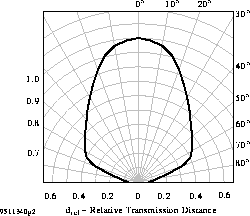

TSOP11..Photo Modules for PCM Remote Control Systems |
Vishay Telefunken |
 Download
data sheet in PDF format ( 85.1 K ) ( Click
here for more information about PDF )
Download
data sheet in PDF format ( 85.1 K ) ( Click
here for more information about PDF )
| Type | f0 |
|---|---|
| TSOP1130 | 30 kHz |
| TSOP1133 | 33 kHz |
| TSOP1136 | 36 kHz |
| TSOP1137 | 36.7 kHz |
| TSOP1138 | 38 kHz |
| TSOP1140 | 40 kHz |
| TSOP1156 | 56 kHz |
| Parameter | Test Conditions | Symbol | Value | Unit |
|---|---|---|---|---|
| Supply Voltage | (Pin 2) | VS | -0.3...6.0 | V |
| Supply Current | (Pin 2) | IS | 5 | mA |
| Output Voltage | (Pin 3) | VO | -0.3...6.0 | V |
| Output Current | (Pin 3) | IO | 5 | mA |
| Junction Temperature | Tj | 100 | °C | |
| Storage Temperature Range | Tstg | -25...+85 | °C | |
| Operating Temperature Range | Tamb | -25...+85 | °C | |
| Power Consumption | (Tamb <= 85 °C) | Ptot | 50 | mW |
| Soldering Temperature | t <= 10 s, 1 mm from case | Tsd | 260 | °C |
| Parameter | Test Conditions | Symbol | Min | Typ | Max | Unit |
|---|---|---|---|---|---|---|
| Supply Current (Pin 2) | VS = 5 V, Ev = 0 | ISD | 0.4 | 0.6 | 1.5 | mA |
| Supply Current (Pin 2) | VS = 5 V, Ev = 40 klx, sunlight | ISH | 1 | mA | ||
| Supply Voltage (Pin 2) | VS | 4.5 | 5.5 | V | ||
| Transmission Distance | Ev = 0, test signal see fig.8, IR diode TSAL6200, IF = 0.4 A | d | 35 | m | ||
| Output Voltage Low (Pin 3) | IOSL = 0.5 mA,Ee = 0.7 mW/m2, f = fo, test signal see fig.7 | VOSL | 250 | mV | ||
| Irradiance (30 - 40 kHz) | Test signal see fig.7 | Ee min | 0.4 | 0.6 | mW/m2 | |
| Irradiance (30 - 40 kHz) | Test signal see fig.8 | Ee min | 0.35 | 0.5 | mW/m2 | |
| Irradiance (56 kHz) | Test signal see fig.7 | Ee min | 0.45 | 0.7 | mW/m2 | |
| Irradiance (56 kHz) | Test signal see fig.8 | Ee min | 0.40 | 0.6 | mW/m2 | |
| Irradiance | Test signal see fig.7 | Ee max | 30 | W/m2 | ||
| Directivity | Angle of half transmission distance | phi1/2 | ±45 | deg |
|
Figure 1: Frequency Dependence of Responsivity |
Figure 2: Pulse Length and Sensitivity in Dark Ambient |
|
Figure 3: Sensitivity in Bright Ambient |
Figure 4: Sensitivity vs. Electric Field Disturbances |
|
Figure 5: Sensitivity vs. Supply Voltage Disturbances |
Figure 6: Sensitivity vs. Ambient Temperature |
|
Figure 7: Output Function |
Figure 8: Output Function |
|
Figure 9: Max. Envelope Duty Cycle vs. Burstlength |
Figure 10: Output Pulse Diagram |
|
Figure 11: Supply Current vs. Ambient Temperature |
Figure 12: Relative Spectral Sensitivity vs. Wavelength |
|
Figure 13: Vertical Directivity ϕ |

Figure 14: Horizontal Directivity ϕ |
We reserve the right to make changes to improve technical design
and may do so without further notice.
Parameters can vary in different applications. All operating parameters
must be validated for each customer application by the customer. Should
the buyer use Vishay-Telefunken products for any unintended or unauthorized
application, the buyer shall indemnify Vishay-Telefunken against all claims,
costs, damages, and expenses, arising out of, directly or indirectly, any
claim of personal damage, injury or death associated with such unintended
or unauthorized use.
VISHAY Semiconductor GmbH, P.O.B. 3625, D-74026 Heilbronn, Germany
Telephone: +49 ( 0 ) 7131 67 2831, Fax number: +49 ( 0 ) 7131 67 2423
{kind=link}
{kind=link}
{kind=link}
{kind=link}
{kind=link}
{kind=link}
{kind=link}
{kind=link}
{kind=link}
{kind=link}
{kind=link}
{kind=link}
{kind=link}
{kind=link}